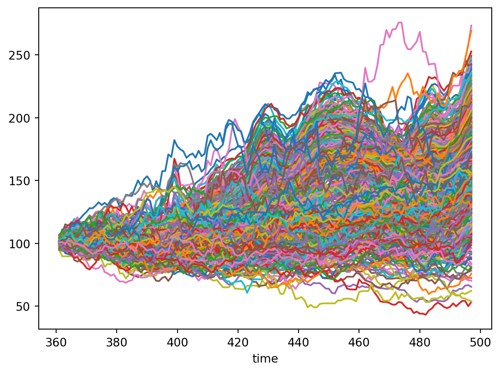
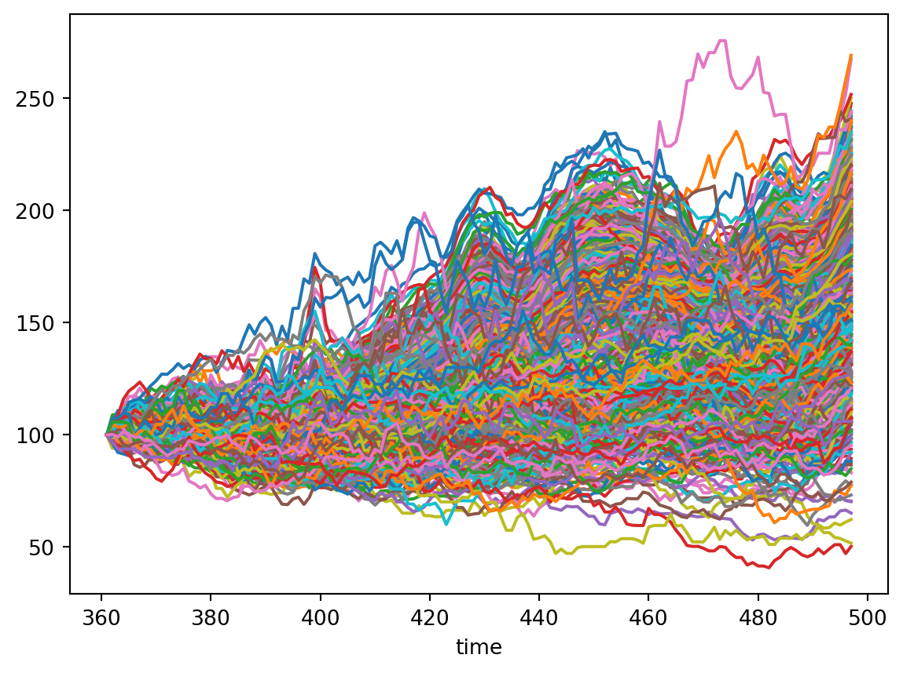
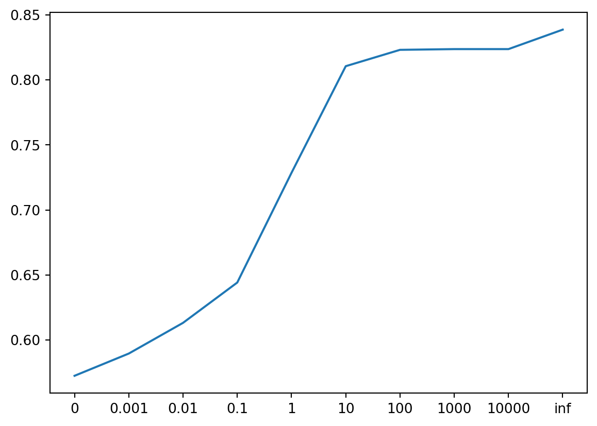
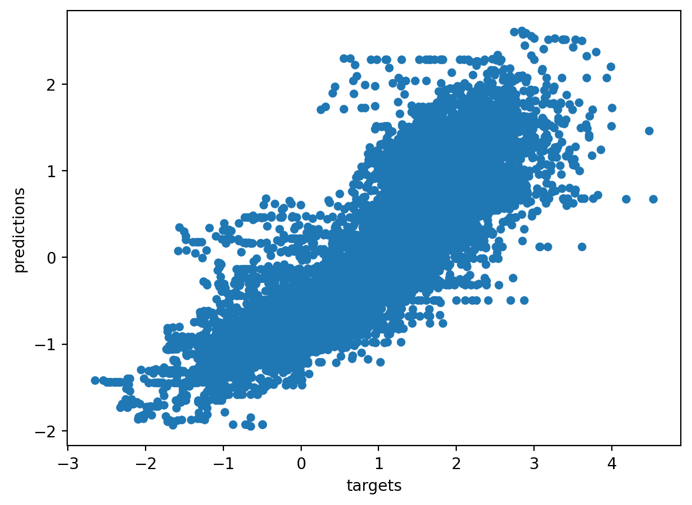
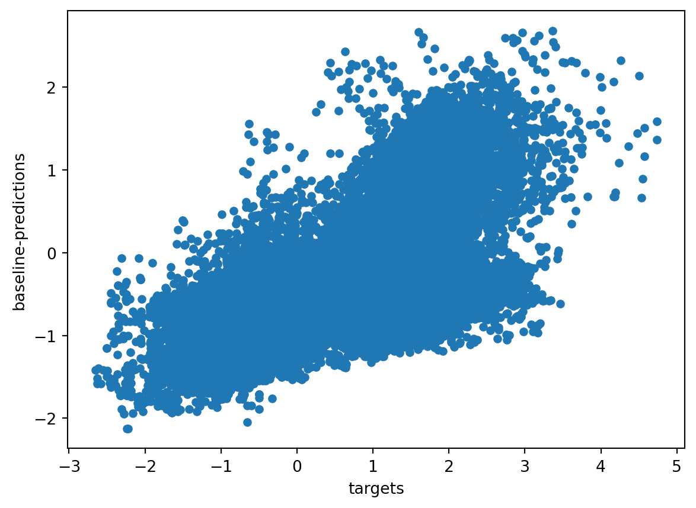
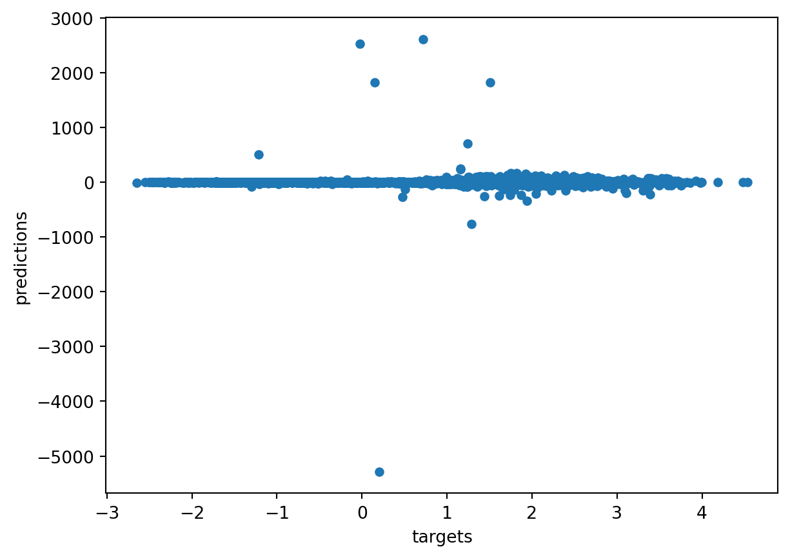

import numpy as np
import pandas as pd
import matplotlib.pyplot as plt
import seaborn as sns
from fastEDM import edm
NUM_THREADS = 8Core Logic House Price Index Prediction
df = pd.read_csv("University of NSW Market Trends - 20210818T145801.csv", low_memory=False)
df = df.loc[pd.notna(df["postcode"])]
df["postcode"] = df["postcode"].astype(int)
df["value_at_date"] = pd.to_datetime(df["value_at_date"])
df| state | sa3_name16 | sa4_name16 | postcode | property_type | value_at_date | Volume of new rental listings (1 month) | Hedonic Rental Yields | Hedonic Home Value Index | Volume of sales (1 month) | |
|---|---|---|---|---|---|---|---|---|---|---|
| 0 | NT | Darwin City | Darwin | 800 | Houses | 1980-01-31 | NaN | 0.0000 | 154.6729 | NaN |
| 1 | NT | Darwin City | Darwin | 800 | Houses | 1980-02-29 | NaN | 0.0000 | 154.6729 | NaN |
| 2 | NT | Darwin City | Darwin | 800 | Houses | 1980-03-31 | NaN | 0.0000 | 154.6729 | NaN |
| 3 | NT | Darwin City | Darwin | 800 | Houses | 1980-04-30 | NaN | 0.0000 | 154.6729 | NaN |
| 4 | NT | Darwin City | Darwin | 800 | Houses | 1980-05-31 | NaN | 0.0000 | 154.6729 | NaN |
| ... | ... | ... | ... | ... | ... | ... | ... | ... | ... | ... |
| 2430904 | TAS | West Coast | West and North West | 7470 | Units | 2021-01-31 | NaN | 0.1163 | 136.2794 | NaN |
| 2430905 | TAS | West Coast | West and North West | 7470 | Units | 2021-02-28 | 2.0 | 0.1108 | 136.8831 | NaN |
| 2430906 | TAS | West Coast | West and North West | 7470 | Units | 2021-03-31 | NaN | 0.1005 | 142.0042 | NaN |
| 2430907 | TAS | West Coast | West and North West | 7470 | Units | 2021-04-30 | NaN | 0.0886 | 150.4537 | NaN |
| 2430908 | TAS | West Coast | West and North West | 7470 | Units | 2021-05-31 | NaN | 0.0854 | 153.0747 | 1.0 |
2430909 rows × 10 columns
df = df.loc[df["state"] == "NSW"]
df = df.loc[df["value_at_date"].dt.year >= 2010]
df = df.loc[df["property_type"] == "Houses"]
# Rename often-used "Hedonic Home Value Index" to HPI (read: home price index).
df.rename(columns={"Hedonic Home Value Index": "HPI"}, inplace=True)# "time" column holds the # months since 1980
df["time"] = (df["value_at_date"].dt.year-1980)*12 + df["value_at_date"].dt.month# https://www.matthewproctor.com/australian_postcodes
australian_postcodes = pd.read_csv("australian_postcodes.csv")counts = df["postcode"].value_counts()
boring_postcodes = list(counts[counts < 12].index)
print(f"# Postcodes with few observations: {len(boring_postcodes)}")
print(f"Postcodes with few observations: {boring_postcodes}")
df = df[~df["postcode"].isin(boring_postcodes)]# Postcodes with few observations: 1
Postcodes with few observations: [2625]np.mean(np.diff(df["HPI"]) == 0)0.024843838727995456df.groupby("postcode").plot(x="time", y="HPI", legend=False, ax=plt.gca());
# TODOsorted(np.unique(df["sa4_name16"]))['Capital Region',
'Central Coast',
'Central West',
'Coffs Harbour - Grafton',
'Far West and Orana',
'Hunter Valley exc Newcastle',
'Illawarra',
'Mid North Coast',
'Murray',
'New England and North West',
'Newcastle and Lake Macquarie',
'Richmond - Tweed',
'Riverina',
'Southern Highlands and Shoalhaven',
'Sydney - Baulkham Hills and Hawkesbury',
'Sydney - Blacktown',
'Sydney - City and Inner South',
'Sydney - Eastern Suburbs',
'Sydney - Inner South West',
'Sydney - Inner West',
'Sydney - North Sydney and Hornsby',
'Sydney - Northern Beaches',
'Sydney - Outer South West',
'Sydney - Outer West and Blue Mountains',
'Sydney - Parramatta',
'Sydney - Ryde',
'Sydney - South West',
'Sydney - Sutherland']df.groupby("postcode").plot(x="time", y="HPI", legend=False, ax=plt.gca());df.groupby("postcode").plot(x="time", y="Hedonic Rental Yields", legend=False, ax=plt.gca());
hpi_start_values = df.groupby("postcode").first()["HPI"]
for postcode in hpi_start_values.index:
df.loc[df["postcode"] == postcode, "HPI"] *= 1 / hpi_start_values[postcode] * 100df.groupby("postcode").plot(x="time", y="HPI", legend=False, ax=plt.gca());
df[["HPI_norm"]] = (df[["HPI"]] - df[["HPI"]].mean()) / df[["HPI"]].std()pws = [0, 0.001, 0.01, 0.1, 1, 10, 100, 1000, 10000, float("inf")]
rhos = np.zeros_like(pws)
for i, pw in enumerate(pws):
t = df["time"]
x = df["HPI_norm"]
panel = df["postcode"]
res = edm(t, x, panel = panel,
panelWeight = pw, p = 5 * 12,
predictWithPast = True,
numThreads = NUM_THREADS,
full = True,
showProgressBar=False,
verbosity = 0,
)
rhos[i] = res["summary"]["rho"]
pd.DataFrame({"panelWeight": pws, "rho": rhos})| panelWeight | rho | |
|---|---|---|
| 0 | 0.000 | 0.572459 |
| 1 | 0.001 | 0.589561 |
| 2 | 0.010 | 0.613168 |
| 3 | 0.100 | 0.644163 |
| 4 | 1.000 | 0.728524 |
| 5 | 10.000 | 0.810509 |
| 6 | 100.000 | 0.823078 |
| 7 | 1000.000 | 0.823643 |
| 8 | 10000.000 | 0.823643 |
| 9 | inf | 0.838611 |
plt.plot(rhos)
plt.xticks(list(range(len(pws))), pws);
t = df["time"]
x = df["HPI_norm"]
panel = df["postcode"]
res = edm(t, x, panel = panel,
panelWeight = float("inf"), p = 5 * 12,
predictWithPast = True,
numThreads = NUM_THREADS,
full = True,
showProgressBar=False,
saveTargets=True,
savePredictions=True,
saveManifolds=True,
verbosity = 2,
)Num threads used is 8
CPU has 24 logical cores and 16 physical cores
Starting the command!
explore true full true shuffle false
numUsable 83912
Waiting for 1 results to come back
Finished successfully!
Number of non-missing stats: 1
Summary of predictions
E library theta rho mae
0 2 83912 1.0 0.838611 0.862499
Number of neighbours (k) is set to between 1 and 3preds = pd.DataFrame({"targets": res["targets"].flatten(), "predictions": res["predictions"].flatten()})
preds = preds.dropna()
print(np.corrcoef(preds["targets"], preds["predictions"])[0,1])
preds.plot.scatter("targets", "predictions");0.8386114885852473
yearAgo = res["Ms"][0][:,0]
targets = res["targets"].flatten()
targets = targets[~np.isnan(targets)]
preds = pd.DataFrame({"targets": targets, "baseline-predictions": yearAgo})
preds = preds.dropna()
print(np.corrcoef(preds["targets"], preds["baseline-predictions"])[0,1])
preds.plot.scatter("targets", "baseline-predictions");0.5977324101870374
res = edm(t, x, panel = panel,
panelWeight = float("inf"), p = 5 * 12,
theta = 0.1,
predictWithPast = True,
numThreads = NUM_THREADS,
algorithm="smap",
full = True,
showProgressBar=False,
# saveTargets=True,
# savePredictions=True,
# saveManifolds=True,
verbosity = 2,
)
if "summary" in res.keys():
print(res["summary"])Num threads used is 8
CPU has 24 logical cores and 16 physical cores
Starting the command!
explore true full true shuffle false
numUsable 83912
Waiting for 1 results to come back
Finished successfully!
Number of non-missing stats: 1
Summary of predictions
E library theta rho mae
0 2 83912 0.1 0.015454 7.557144
Number of neighbours (k) is set to between 1 and 4
E library theta rho mae
0 2 83912 0.1 0.015454 7.557144res = edm(t, x, panel = panel,
panelWeight = float("inf"), p = 5 * 12,
theta = 0.0001,
predictWithPast = True,
numThreads = NUM_THREADS,
algorithm="smap",
full = True,
showProgressBar=False,
saveTargets=True,
savePredictions=True,
saveManifolds=True,
verbosity = 2,
)Num threads used is 8
CPU has 24 logical cores and 16 physical cores
Starting the command!
explore true full true shuffle false
numUsable 83912
Waiting for 1 results to come back
Finished successfully!
Number of non-missing stats: 1
Summary of predictions
E library theta rho mae
0 2 83912 0.0001 0.015452 7.557442
Number of neighbours (k) is set to between 1 and 4preds = pd.DataFrame({"targets": res["targets"].flatten(), "predictions": res["predictions"].flatten()})
preds = preds.dropna()
print(np.corrcoef(preds["targets"], preds["predictions"])[0,1])
preds.plot.scatter("targets", "predictions");0.015451999078238165